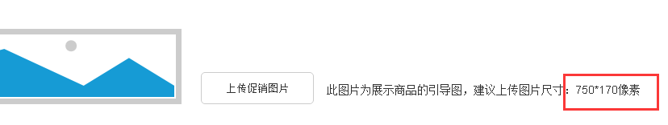

1、数据库简单模型构建
2、关联业务方
商品服务、促销服务、拼团服务等
3、咨询查裕忠，商品服务存储商品无活动相关的信息，因此在商品添加上需要进行调用对应的接口进行相关的分类，供用户添加
4、存在的疑问：
4.1
区域名称为促销区域，是否允许没有参加任何活动的商品添加进去
4.2

促销图片的建议上传尺寸可否规定死，新凑单页就因为这样的问题很坑。
4.3
已经添加进一种装修的商品是否能够继续添加进别的装修模式，不同活动的配置商品是否互斥
4.4
预览活动信息能不能不要扫描二维码，而是直接弹出模态框进行展示
5、静态接口定义
1、提供给app的店铺装修展示接口
2、查询促销获取商品的促销详情接口
3、查询拼团获取商品的拼团活动信息接口
4、查询商品服务获取当前店铺的所有商品接口
5、后台配置的相关接口
6、搭建项目架构